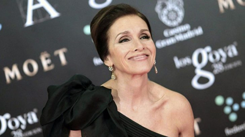

Real Chubut - Agencia de Noticias


Ana Belén recibirá su primer Goya, el de Honor

La actriz, cantante y directora Ana Belén recibirá el Goya de Honor 2017, según informó la Academia de Cine. La Junta Directiva de la Academia le ha otorgado por unanimidad este galardón “a una actriz que es referente de muchas generaciones y sigue siendo rostro y voz imprescindible de nuestra cinematografía”.
Su carrera cinematográfica, compuesta por más de 50 títulos, arrancó cuando la actriz tenía 13 años, bajo la dirección de Luis Lucia y junto a Fernando Rey, en “Zampo y yo”, en la que interpretaba canciones de Augusto Algueró y Adolfo Waitzman. Y este año estrenará “La Reina de España”, de Fernando Trueba, su última incursión en la gran pantalla.
“Este premio es la manera que mis grandes compañeros han tenido de decirme que me quieren, significa que me tienen estima y eso es lo que más emoción me produce: sentirme parte de la familia de cine, saber que piensan en mí”, ha señalado Ana Belén en sus primeras declaraciones a la Academia.
Debut a los 13 años
Tras su debut, que no logró la repercusión deseada, Ana Belén se dedicó al teatro. Cervantes, Tirso de Molina, Lope de Vega, Shakespeare, Molière o Zorrilla llenaron cinco años de carrera en los escenarios, que compaginó con grabaciones para “Estudio 1” de TVE a las órdenes de directores como Pilar Miró.
En 1970 regresó al mundo del cine con “Españolas en París”, de Roberto Bodegas y a partir de ahí comenzó una larga y fructífera trayectoria cinematográfica, con títulos como “Aunque la hormona se vista de seda” (Vicente Escrivá), “Morbo” y “Al diablo con el amor” (Gonzalo Suárez) o “Separación matrimonial” (Angelino Fons).
Le siguieron películas con Jaime de Armiñán (“El amor del capitán Brando” y “Jo, papá”), Pedro Olea (“Tormento”), Eloy de la Iglesia (“La criatura”), Pilar Miró (“La petición”) o José Luis García Sánchez (“Emilia, parada y fonda” y “Sonámbulos”).
A finales de la década de los setenta Ana Belén era ya una de las actrices españolas mejor valoradas, además de una de las voces más destacadas de la música.
Cantante de referencia
Joan Manuel Serrat, Víctor Manuel, Luis Eduardo Aute, Joaquín Sabina, Pablo Milanés, Miguel Ríos, Carlos Mejía Godoy, Chico Buarque o Djavan son algunos de los músicos con los que ha compartido trayectoria.
La década de los 80 comenzó colándose en los hogares a través de la serie de televisión “Fortunata y Jacinta”, donde dio vida a la “mujer bonita, joven, alta” de la obra de Galdós.
Le siguieron títulos indispensables del cine como “La colmena” y “La casa de Bernarda Alba”, de Mario Camus; “Demonios en el jardín”, de Manuel Gutiérrez Aragón; “La corte de Faraón”, “Divinas palabras” y “El vuelo de la paloma”, de Jose Luis García Sánchez; y “Sé infiel y no mires con quién”, de Fernando Trueba.
Experiencia como directora
En 1991 se estrenó como directora adaptando la obra de Carmen Rico Godoy “Cómo ser mujer y no morir en el intento”, filme español más taquillero de ese año protagonizado por Carmen Maura y Antonio Resines.
En esa misma década protagonizó títulos como “Rosa, rosae”, de Fernando Colomo; “La pasión turca” y “Libertarias”, de Vicente Aranda; o “El amor perjudica seriamente la salud”, de Manuel Gómez Pereira, entre otros.
Y ya en el nuevo milenio intervino, junto a Cecilia Roth, en “Antigua vida mía”, dirigida por Héctor Olivera, y “Cosas que hacen que la vida valga la pena”, de Gómez Pereira.
En teatro ha seguido codeándose con directores como José Carlos Plaza, José Luis Gómez, Joan Ollé y Magüi Mira, entre otros, y ha interpretado personajes de Chéjov, Max Aub, Alberti, Lorca, Shakespeare, García Márquez y Vargas Llosa.
En los últimos años, se ha metido en la piel de Fedra, Electra y Medea. La televisión tampoco le ha sido ajena, donde, entre otros trabajos protagonizó la serie “Petra Delicado”, dando vida a la detective de la novela de Alicia Giménez Bartlett.
Caballero de la Orden de las Artes y Letras francesas en 1986, Medalla de Oro de la Academia 1995 y Medalla de Oro al mérito en las Bellas Artes en 2007, Ana Belén ha optado cinco veces a los Goya, cuatro a mejor actriz protagonista y una como directora novel.
Otros premios en su haber son tres Ondas, seis Fotogramas de Plata, un TP de Oro, la Medalla de Honor del Círculo de Escritores Cinematográficos y un Grammy latino a la excelencia musical.